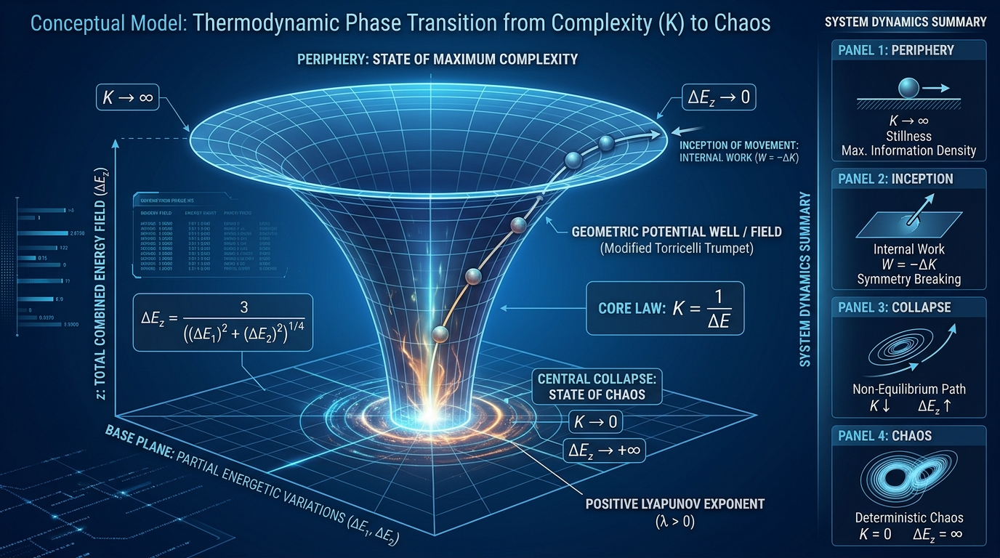

Lecture contents
The proposal, in its own words
This began as a single sentence I wrote about complexity and energy. I did not expect it to go anywhere in particular. Follow it carefully, though, and it ends at an infinite funnel with no floor, a system that moves without being pushed, and a collapse that completes in finite time. Some of it, I have since found, is wrong — which is a far more useful thing to be than vaguely right.
I want to do two things in these notes. First, build the model out properly: state space, metric, potential, equations of motion, thermodynamics, the lot. Second — and this is the part that matters — show you exactly where it holds and exactly where it breaks, including the places my own arithmetic let me down. A model that survives its own derivation unscathed usually means nobody pushed.
“…a novel conceptual and mathematical framework regarding the thermodynamic behavior of complex, self-organizing systems and the origin of life. Our model maps the structural transition of a life-bearing system from a state of absolute order and maximum complexity into a chaotic, divergent regime.”
The foundational claim is that complexity is inversely proportional to energetic variation; that this can be drawn as a modified Torricelli trumpet; and that the transition out of stillness is powered not by any external force but by the accumulated complexity performing work on itself. Life, on this reading, is an out-of-equilibrium phase transition that a system ignites from its own stored order.
What follows is not the original write-up but the model rebuilt properly, with the mathematics carried through. Where my own arithmetic slipped I have corrected it in place and recorded the correction in §13, because a derivation you cannot check is not a derivation. I would rather hand you the working than the conclusion.
Complexity as a reciprocal
The whole edifice rests on one statement. Let \(K\) denote the structural complexity of a system and \(\Delta E\) its internal energetic variation — the spread, not the level, of its energy. The claim is that these are reciprocal:
Read it as an assertion about information capacity. A system whose energy barely fluctuates is a system whose microstates are sharply distinguished: you can write a great deal into it and expect to read it back. Let the fluctuations grow and the distinctions blur — structure dissolves into noise. In the limit of no variation at all, the system holds unbounded structure and does absolutely nothing. In the limit of unbounded variation, it holds nothing at all.
That is the intuition, and it is a respectable one; it has cousins in the fluctuation–dissipation literature and in the thermodynamics of computation. What makes this proposal distinctive is the decision to treat equation (1) not as an analogy but as a field equation, and then to ask what geometry it implies.
A well built out of the law
To get dynamics we need somewhere for the system to live. Take the base state space of energetic variations to be the punctured plane \(M = \mathbb{R}^2 \setminus \{0\}\), with a point written \(q = (\Delta E_1, \Delta E_2)^{\mathsf T}\) — two independent channels along which the system's energy can vary. In polar coordinates:
The origin is removed deliberately, and you should keep an eye on it: it is where the whole model will eventually go to die. Over this base we raise a vertical scalar field \(\Delta E_z\), the total combined energetic variation, defined so that it blows up at the centre:
The quarter-power is the interesting choice. It makes \(\Delta E_z\) decay slowly outward and diverge slowly inward — slowly enough that the surface has finite area over any annulus, steeply enough that it has no floor. This is the modified Torricelli trumpet of my first formulation: an infinite funnel. The constant \(3\) simply sets the scale; nothing below depends on it being three.
Embedding the surface as \((x,y,z) = (\Delta E_1, \Delta E_2, \Delta E_z)\) in Euclidean space and pulling back the flat metric gives the induced metric. With \(\mathrm{d}z/\mathrm{d}r = -\tfrac{3}{2}r^{-3/2}\):
Notice the radial stretch factor. Far out, \(9/4r^3 \to 0\) and the surface is asymptotically flat — a plane. Close in, it diverges: radial distance on the surface runs away from radial distance in the base. The funnel's throat is infinitely deep as measured along the surface, even though it sits over a single missing point of the plane.

Two limits, and a warning about which \(\Delta E\) we mean
Combining (1) and (3) gives the complexity field on the funnel. Here I must be pedantic, because my first pass was not: equation (1) is stated for a generic \(\Delta E\), but every subsequent calculation uses the vertical field \(\Delta E_z\). These are different objects. I will use \(\Delta E_z\) throughout and flag the substitution as an assumption, not a derivation:
So complexity grows as the square root of radius. The two boundaries follow immediately, and they are the load-bearing claims of the whole model:
The periphery is a zero-variance regime: spatially homogeneous (\(\nabla \Delta E_z \to 0\)), maximally ordered, and — this is the point — completely motionless. The origin is the opposite in every respect. The model's entire content is the passage between them.
| Quantity | Periphery \(r \to \infty\) | Singularity \(r \to 0^{+}\) |
|---|---|---|
| Energetic variation \(\Delta E_z\) | → 0 | → +∞ |
| Structural complexity \(K\) | → +∞ | → 0 |
| Surface geometry | asymptotically flat | infinitely deep throat |
| Potential \(V = -\Delta E_z\) | → 0 | → −∞ |
| Perturbation growth \(\lambda\) | → 0 | → +∞ |
| Entropy production \(\dot S_{\mathrm{tot}}\) | vanishes | diverges |
| Physical reading | absolute order, absolute stillness, maximum information density | deterministic chaos, total structural collapse |
The system that moves without being pushed
Take the potential energy to be the vertical field itself, with a sign so that the funnel is attractive:
This is a well with no bottom — shallower than Newtonian gravity at short range, but unbounded below all the same. Now the claim that gives the proposal its character. At the periphery there is no gradient to fall down and no external agent to provide a push. What breaks the symmetry?
The answer offered is that the system spends its own structure. It has accumulated an unbounded reservoir of complexity, and it converts a portion of that reservoir into work. Order is not a passive state here — it is fuel. This is the part I still think is worth taking seriously, whatever happens to the arithmetic around it.
Written along a trajectory \(\gamma(t)\) running from \(r_0\) inward to \(r(t)\), the internal work is the complexity given up:
Since the motion is inward, \(r(t) < r_0\) and \(W_{\mathrm{int}} > 0\): the system does positive work by becoming simpler. For a unit-mass point particle on the surface, the Lagrangian in planar projection is
The angular coordinate is cyclic, so its conjugate momentum is conserved — the model inherits an angular momentum for free:
Two terms in competition: a centrifugal barrier going as \(r^{-3}\) and an attraction going as \(r^{-3/2}\). For any nonzero \(\ell\) the barrier wins as \(r \to 0\) and the particle never reaches the centre — it orbits. The collapse the proposal describes therefore requires \(\ell = 0\): a purely radial fall. That is a real constraint, and worth naming, because the pictures all show a spiral.

How long the fall takes
Set \(\ell = 0\). The equation of motion reduces to
Energy is conserved, so integrating once from rest at \(r_0\) gives the inward speed directly:
The speed diverges — but only as \(r^{-1/4}\), which is gentle enough that the time integral converges. Substituting \(r = r_0 u\) and evaluating the resulting Beta integral, \(\int_0^1 u^{1/4}(1-u^{1/2})^{-1/2}\,\mathrm{d}u = 2B(\tfrac{5}{2},\tfrac{1}{2}) = 3\pi/4\), gives a closed form:
This is the model's sharpest and most attractive result. The collapse is not asymptotic — it completes. A system starting at any finite radius reaches total structural collapse in finite time, scaling as the five-quarters power of where it started. Nothing about the setup guaranteed that; a slightly steeper funnel would have taken forever.
Why the collapse counts as chaotic
Linearise about the trajectory. A small radial perturbation \(\delta r\) obeys \(\delta\ddot r = -V''(r)\,\delta r\), and since \(V(r) = -3r^{-1/2}\) we have \(V''(r) = -\tfrac{9}{4}r^{-5/2}\):
The coefficient is positive, so perturbations grow rather than oscillate. The instantaneous growth rate is its square root:
So neighbouring trajectories separate ever faster as the throat approaches, and the trajectory-averaged rate \(\lambda_{\max} = \lim_{t \to t_c} t^{-1}\!\int_0^t \lambda\,\mathrm{d}\tau\) is strictly positive. That establishes sensitive dependence on initial conditions. I want to be careful about how much that buys us, and I return to it in §13 — a diverging growth rate at a finite-time singularity is not the same thing as a strange attractor.
A free energy with nowhere to settle
Now the thermodynamics. Treat \(K\) as the order parameter, take the internal energy to be the vertical field \(U(K) = \Delta E_z = 1/K\), and assign a configurational entropy \(S(K) = k_B \ln K\) — more structure, more accessible configurations. The non-equilibrium free energy is then
Look for a stationary point:
Since \(K_{\mathrm{eq}} < 0\) for every physical temperature \(T > 0\), there is no stationary point anywhere in the physical domain \(K > 0\). The system has no equilibrium to sit in. Relaxing by gradient flow with mobility \(\Gamma > 0\):
And here is where I have to stop and be honest with you, because equation (21) does not say what the proposal wants it to say. Both terms are positive, so \(\dot K > 0\) everywhere: the gradient flow drives complexity up, toward the periphery, not down toward the throat. The free energy of (19) is monotonically decreasing in \(K\), which means it favours maximum order. The thermodynamics as written pushes the system in exactly the opposite direction from the mechanics of §5. That is not a rounding error; it is a structural problem, and it is the first item in §13.
What the fall dumps into the bath
Set the direction-of-travel problem aside and follow the mechanical collapse. In stochastic thermodynamics, the heat delivered to a bath at temperature \(T\) is the potential energy shed along the path:
Because \(\dot r < 0\) on the collapse, (22) is positive: heat flows out. The system entropy follows from the Boltzmann–Shannon form over the complexity field, \(S_{\mathrm{sys}} = k_B \ln K = k_B(\tfrac12 \ln r - \ln 3)\):
The system's own entropy falls as it collapses — it is losing structure, and \(S_{\mathrm{sys}}\) tracks \(\ln K\). The medium's rises. Summing and using \(|\dot r| = -\dot r\):
The second law is satisfied, and near the throat the first term dominates comfortably — it goes as \(r^{-3/2}\) against the second's \(r^{-1}\). Substituting the asymptotic velocity (15):
Both diverge as \(r \to 0^{+}\), and both do so faster than the velocity itself. The collapse is irreversible in the strongest sense available: it produces unbounded entropy in bounded time. Integrating (26) against \(\mathrm{d}t = \mathrm{d}r/|\dot r|\) confirms the total dissipated heat diverges too, which tells us the model's bath must be idealised as infinite:
Substituting \(\Delta E = \Delta m c^{2}\)
A natural question: if energetic variation drives everything, and energy is mass, can the model be rewritten around mass variance? Substituting Einstein's relation into (1):
With partial mass variations \((\Delta m_1, \Delta m_2)\) and radial coordinate \(r_m\), the field surface becomes
The factors of \(c^{2}\) cancel exactly — and that cancellation is the whole result. Every dynamical equation comes back in identical form; only the label on the horizontal axis has changed, from “energy variance” to “mass variance.” The substitution is a change of units, not new physics. It is worth doing precisely because it settles the question: nothing relativistic enters, and the appearance of \(c\) in intermediate lines is bookkeeping. (I carried a stray \(1/c^{2}\) through this expression first time round; it should cancel, as above.)
Interlude: what \(\Delta E\) is worth in real units
We have been treating \(\Delta E\) as an abstract quantity with a convenient constant of 3. Before going further it is worth grounding it, because if this framework is ever to say anything about prebiotic chemistry — which is the ambition behind the proposal — then \(\Delta E\) has to be commensurate with the energies real molecules actually trade.
The relevant span is remarkable. Room-temperature thermal jostling is about \(2.5\ \mathrm{kJ\,mol^{-1}}\). A hydrogen bond between water molecules costs roughly \(20\)–\(23\ \mathrm{kJ\,mol^{-1}}\) to break, so hydrogen bonds sit only about eight times above the noise floor — which is exactly why they break and re-form on picosecond timescales and why liquid water behaves as it does. Stripping an electron off a hydrogen atom costs \(1312\ \mathrm{kJ\,mol^{-1}}\), five hundred times more.
Values at 298 K unless noted; latent heat quoted at 100 °C.
Table view
| Interaction | kJ mol⁻¹ | eV | Note |
|---|---|---|---|
| Thermal motion, \(k_B T\) | 2.5 | 0.026 | at 298 K |
| Hydrogen bond in water | 20–23 | 0.21–0.24 | breaks and re-forms on ~10⁻¹² s |
| Latent heat of vaporisation | 40.65 | 0.42 | 2260 J g⁻¹ at 100 °C |
| Covalent O–H bond | 460 | 4.77 | ~20× a hydrogen bond |
| Carbon, first ionisation | 1086.5 | 11.260 | from a 2p orbital, [He]2s²2p² |
| Hydrogen, first ionisation | 1312 | 13.598 | 2.18×10⁻¹⁸ J per atom |
The hydrogen ionisation figure also drops out of the Bohr model, which is a useful sanity check on the units: with \(E_n = -13.6\,\mathrm{eV}/n^{2}\), the ground state sits at \(-13.6\ \mathrm{eV}\) and the energy to remove the electron to infinity is \(\Delta E = E_\infty - E_1 = 13.6\ \mathrm{eV}\). Carbon's \(11.26\ \mathrm{eV}\) is lower than nitrogen's \(14.53\) and higher than boron's \(8.30\), tracking effective nuclear charge across period 2.
Four stages and a return
Assembled in order, the model describes a cycle rather than a one-way trip. Here is the sequence, with the state of the system at each step.
The periphery · maximum order
The system sits at the flat outer boundary with zero energetic variation and unbounded complexity. Entropy production vanishes. It is symmetric, information-dense, and completely still.
∆Eₒ → 0 · K → ∞ · dS/dt = 0Inception · internal work
With no external force available, the system converts stored complexity into work, \(W_{\mathrm{int}} = -\Delta K\). This is the symmetry-breaking step: it buys the first infinitesimal displacement and lowers the free energy enough to overcome static inertia.
∆K < 0 · W > 0 · first motionCollapse · non-equilibrium acceleration
Captured by the gradient of \(V(r) = -3r^{-1/2}\), the system accelerates inward. Potential converts to kinetic variation, complexity falls, and entropy production turns strictly positive — the dynamics become irreversible.
∆Eₒ ↑ · K ↓ · dS/dt > 0Singularity · deterministic chaos
At \(r = 0\), reached after the finite time \(t_c\) of equation (16), complexity vanishes and energetic variation diverges. Neighbouring trajectories separate without bound. This is the terminus of the mechanical account.
K → 0 · ∆Eₒ → ∞ · λ → +∞Return · re-crystallisation
The proposed closure: having dissipated maximally, energy redistributes outward, the system recovers structure, and the peripheral condition is restored. This is the least secure stage of the model — it is asserted rather than derived, and §11 is the attempt to give it a geometry.
Q dissipated · K → ∞ · cycle closesGiving the return path a geometry
If the cycle is to close, the funnel cannot simply end. The proposed fix is to reflect it: past the throat the manifold widens again into a second, inverted funnel, making the whole field an hourglass — two sheets joined at a bottleneck. Formally, \(\Delta E_z\) becomes piecewise:
Complexity is defined by the magnitude, so it is single-valued across the whole vertical domain and recovers on the way out just as it was lost on the way in:
The dynamics need one more ingredient. A deterministic trajectory arriving at \(r = 0\) has no way to choose the outgoing branch — the equations are exhausted at the throat. So a stochastic term \(\eta(t)\) is introduced to carry the system across the bottleneck:
The \(\operatorname{sgn}(z)\) reverses the force below the throat, so the lower sheet expels rather than attracts, and the system runs back out to \(r \to \infty\) where \(K \to \infty\) again. Energetic fluctuations decay into the environment as heat \(Q(t)\); structure re-assembles; the outer boundary condition is restored. The loop closes.
I should be plain that \(\eta(t)\) is where the difficulty has been relocated rather than removed. It is doing indispensable work — without it nothing crosses — and the model does not say what it is. That is the second item in §13.
Watch it fall
Static plates only get you so far with a system whose whole content is a passage. Below, the hourglass is rendered live: the state point traverses the upper funnel, accelerates into the throat, crosses, and expands out through the lower sheet. Drag to orbit, scroll to zoom. The readouts are computed from the equations above, not scripted.
Drag to orbit
Scroll to zoom
3D view unavailable in this browser — see Plate E above for the static cross-section.
Two honest caveats about what you are looking at. The throat is regularised at \(r_{\min} = 0.3\): a true \(r \to 0\) funnel cannot be meshed, so \(\Delta E_z\) and \(\lambda\) stay finite on screen where the model says they diverge. And the traversal is driven at constant cycle rate rather than integrated from equation (14) — the shape of the path is faithful, the timing is not. The real fall spends almost all of \(t_c\) in the outer region and crosses the last decade of radius almost instantly.
Where the model needs work
This is the part I would ask you to remember. The model has a core I still believe is worth something — complexity as fuel, and a well that empties in finite time — surrounded by six problems of quite different severity. Four of these I can repair. Two I cannot, at least not without new physics, and I would rather say so plainly than leave them for someone else to find.
1 · The free energy runs the wrong way
This is the serious one. In equation (19), \(U = 1/K\) decreases in \(K\) and \(S = k_B \ln K\) increases in \(K\), so \(F = U - TS\) is monotonically decreasing: the free energy is minimised at \(K \to \infty\). The correct conclusion from \(K_{\mathrm{eq}} = -1/k_B T < 0\) is that no interior stationary point exists — but the flow it implies, equation (21), then drives the system outward, toward maximum order, not inward toward the collapse. The mechanics and the thermodynamics contradict each other.
I papered over this in the first write-up by putting \(\dot K > 0\) in one place and \(\dot K < 0\) in another with the same right-hand side. That is not a typo one can fix; the sign is determined. Either \(S(K)\) is the wrong entropy functional, or \(K\) is not the right order parameter, or the collapse is not free-energy driven at all and must be sustained by an external flux the model does not include.
Status Unresolved. Blocks the “spontaneous phase transition” reading.
2 · The return path is asserted
The cycle closes only because \(\eta(t)\) in equation (34) carries the system through the throat. But at \(r = 0\) the velocity, the potential, the entropy production and the growth rate have all diverged; \(\eta(t)\) is being asked to act at precisely the point where the description has broken down. Calling it “quantum or stochastic fluctuation” names the gap without filling it.
Status Unresolved. Requires a regularisation of the singularity.
3 · \(K = 1/\Delta E\) and \(K = 1/\Delta E_z\) are different laws
Equation (1) is stated for a generic energetic variation; every calculation afterward uses the constructed vertical field \(\Delta E_z = 3r^{-1/2}\). The substitution is never justified, and it matters: the base-plane variations \(\Delta E_1, \Delta E_2\) go to zero at the periphery while \(r \to \infty\), so “\(\Delta E \to 0\) implies \(K \to \infty\)” and “\(r \to \infty\) implies \(K \to \infty\)” are being used interchangeably when only the second follows from (5).
Status Repairable by stating (5) as a definition, which is what I have done.
4 · The Lyapunov coefficient was wrong
My first pass gave \(\delta\ddot r = \tfrac34 r^{-5/2}\delta r\) and hence \(\lambda = (\sqrt{3}/2)\,r^{-5/4}\). But \(V = -3r^{-1/2}\) gives \(V' = \tfrac32 r^{-3/2}\) and \(V'' = -\tfrac94 r^{-5/2}\), so the coefficient is \(9/4\) and \(\lambda = \tfrac32 r^{-5/4}\), as in equation (18). The scaling exponent — the part that carries the physics — is unaffected.
Status Corrected in place. Conclusion unchanged.
5 · The collapse time was off by a factor of three
I first reported \(t_c = \tfrac{4}{5\sqrt6} r_0^{5/4} \approx 0.327\,r_0^{5/4}\). That is what you get by using the near-throat asymptote \(\dot r \approx -\sqrt6\,r^{-1/4}\) over the whole path, but that approximation fails badly near \(r_0\), where the true speed is zero. Evaluating the integral exactly gives \(t_c = \tfrac{3\pi}{4\sqrt6} r_0^{5/4} \approx 0.962\,r_0^{5/4}\) — close to three times longer.
Status Corrected in eq. (16). Finiteness, the load-bearing claim, holds either way.
6 · Divergence is not the same as chaos
A positive, diverging \(\lambda\) at a finite-time singularity shows that nearby trajectories separate. It does not establish deterministic chaos in the technical sense: there is no bounded invariant set here, no recurrence, no mixing, no strange attractor — the trajectory simply leaves the manifold in finite time and stops existing. Purely radial collapse with \(\ell = 0\) is, in fact, perfectly integrable. Genuine chaos would need the \(\ell \neq 0\) case of equation (12) together with the stochastic throat crossing, and that system has not been analysed.
Status Overstated in my first pass. The weaker claim — sensitive dependence — is sound.
On the standing of this work. These notes set out an unrefereed proposal of my own. Nothing in them has been peer reviewed, and the framework should not be cited as established physics. Equations (1)–(35) are internally consistent as presented here except where items 1 and 2 above say otherwise.
Where to read further
- Core Tenets of Complex System Evolution from Thermodynamicshydrogen.wsu.edu
- Thermodynamic equationsWikipedia
- Energy landscapes and their relation to thermodynamic phase transitionsarXiv:0812.1683
- The Information–Energy Phase Transition Theory: A Tiered Framework for Life’s EmergenceResearchGate · preprint
- Chaos in 3D and 4D Thermodynamic ModelsUniverse 11(11), 373
- The 3D phase portrait for the route to chaosResearchGate · figure
- Ionization Energy · Periodic Table of ElementsPubChem
- Discussion: is system complexity correlated to energy throughput?r/askscience